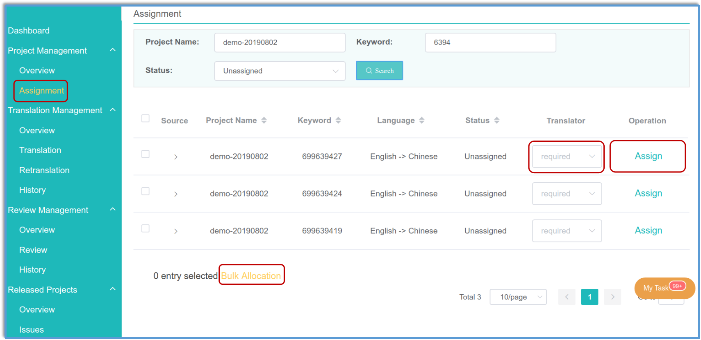

Workflow

Step 1. creation: user (owner) create project, upload database and assign items to translators
Step 2. translation: translators continously translate until approved
Step 3. review: reviewer review translation
Step 4. release: owner release a version
Step 5. iteration: all members cooperate to optimize translation and release a better version
Step 1: Creation
Owner initiated the project:
create project and build translation team
upload database csv files
assign translation tasks to translators

Step 2: Translation
Translators need continous translation until approved by reviewers:
- first translate items assigned by owner.

- re-translate items refused by reviewers.

Step 3: Review
reviewer check the translation and decide whether to approve or not.

Step 4: Release
owner release first version.

Step 5: Iteration
Scenarios that trigger iteration
- guest suggestion were accepted: guest can submit suggestions to optimize translation.

- new items: owner add more items to the project.

version iteration procedures
The first step is slightly different with first release, and others are same.
- owner assign job to translators.
- guest suggestion: master accept the suggestion, and re-assigned item to translator;

- new items: master assign new items to translators (step1). 
- guest suggestion: master accept the suggestion, and re-assigned item to translator;
- translator contiously translate until approved (step2)
- review review the translation (step3).
- owner release new version (step4).